library(readr)
library(janitor)
library(dplyr)
library(patchwork)
library(tidyr)Method testing
hg38_data <- readRDS("/home/jp2045/coloc-estimated-eqtl-priors/data/tss-data/hg38-tss-data.rds")plot_bfs <- function(bfs, snps, tss = NULL, with_prior = FALSE) {
# Only take the first susie signal.
bfs <- bfs[1, snps]
# Assume SNPS are in chr:bp format.
bps <- vapply(strsplit(snps, ":"), \(x) as.numeric(x[[2]]), numeric(1))
if (!is.null(tss) & with_prior) {
prior_vec <- 10^-4 * length(bps) * coloc:::calculate_non_uniform_p(bps, tss)
bfs <- bfs + log(prior_vec)
}
if (is.null(tss) & with_prior) {
bfs <- bfs + log(10^-4)
}
p <- tibble(bf = bfs, bp = bps) |>
ggplot(aes(bp, bf)) +
geom_point()
if (!is.null(tss)) {
p <- p + geom_vline(xintercept = tss, colour = "red")
}
if (with_prior) {
p <- p + labs(x = "", y = "BF + log(p)")
} else {
p <- p + labs(x = "", y = "BF")
}
p +
theme_bw()
}
lookup_tss <- function(trait) {
gene_id <- unlist(strsplit(trait, ".", fixed = TRUE))[[2]]
hg38_data |>
filter(ensembl_gene_id == gene_id) |>
pull(tss)
}load("/rds/project/cew54/rds-cew54-basis/People/CHRIS/colocs_for_jeffrey.RData")
devtools::load_all("~/coloc")
# 27 rows have 'too small overlap' warnings.
method_comparison_data <- COLOC |>
# The BLUEPRINT Bayes factors are empty.
filter(!(substr(trait1, 1, 9) == "BLUEPRINT" | substr(trait2, 1, 9) == "BLUEPRINT")) |>
as_tibble() |>
mutate(
gene1 = grepl("ENSG", trait1, fixed = TRUE),
gene2 = grepl("ENSG", trait2, fixed = TRUE)
) |>
filter(gene1 | gene2) |>
rowwise() |>
mutate(expr_hit = ifelse(gene1, hit1, hit2)) |>
# Assume that only 1 trait is an expression trait.
mutate(tss = ifelse(gene1, lookup_tss(trait1), lookup_tss(trait2))) |>
select(trait1, trait2, block, tss, gene1, expr_hit, hit1.margz, hit2.margz) |>
mutate(coloc_unif = list(coloc.bf_bf(BF[[block]][[trait1]], BF[[block]][[trait2]]))) |>
mutate(coloc_non_unif = ifelse(
gene1,
list(coloc.bf_bf(BF[[block]][[trait1]], BF[[block]][[trait2]], tss1 = tss)),
list(coloc.bf_bf(BF[[block]][[trait1]], BF[[block]][[trait2]], tss2 = tss))
)) |>
rowwise() |>
mutate(h4_unif = list(coloc_unif$summary$PP.H4.abf)) |>
mutate(h4_non_unif = list(coloc_non_unif$summary$PP.H4.abf)) |>
filter(!any(is.na(h4_unif))) |>
filter(!any(is.na(h4_non_unif)))method_comparison_data |>
mutate(
h4_non_unif = max(h4_non_unif),
h4_unif = max(h4_unif)
) |>
separate_wider_delim(expr_hit, delim = ":", names = c("hit_chr", "hit_bp")) |>
mutate(log_hit_tss_distance = log10(abs(tss - as.numeric(hit_bp)))) |>
ggplot(aes(h4_unif, h4_non_unif, col = log_hit_tss_distance)) +
geom_point() +
geom_segment(aes(xend = h4_unif, yend = h4_unif), color = "grey") +
geom_abline(col = "grey") +
labs(
x = "H4: Uniform priors",
y = "H4: Non-uniform priors",
col = "TSS\ndistance"
) +
theme_bw()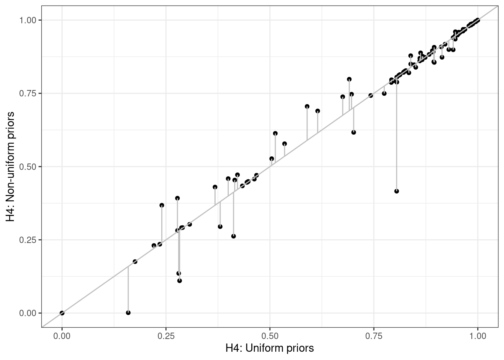
method_comparison_data |>
mutate(
h4_non_unif = max(h4_non_unif),
h4_unif = max(h4_unif)
) |>
separate_wider_delim(expr_hit, delim = ":", names = c("hit_chr", "hit_bp")) |>
mutate(log_hit_tss_distance = log10(abs(tss - as.numeric(hit_bp)))) |>
mutate(h4_diff = h4_unif - h4_non_unif) |>
ggplot(aes(log_hit_tss_distance, h4_diff)) +
geom_point() +
theme_bw()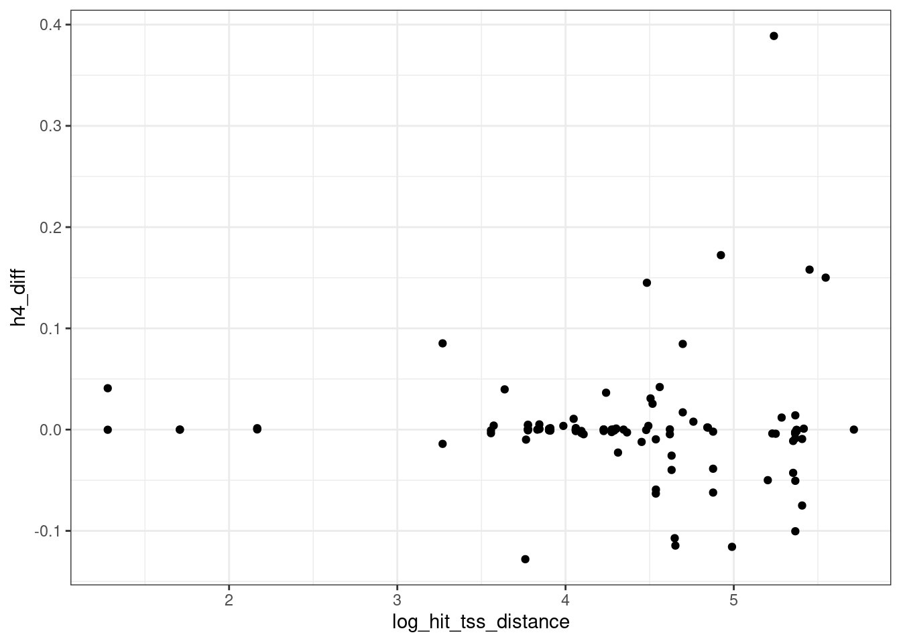
method_comparison_data |>
mutate(
h4_non_unif = max(h4_non_unif),
h4_unif = max(h4_unif)
) |>
mutate(margz_diff = abs(hit1.margz - hit2.margz)) |>
mutate(h4_diff = h4_unif - h4_non_unif) |>
ggplot(aes(margz_diff, h4_diff)) +
geom_point() +
theme_bw()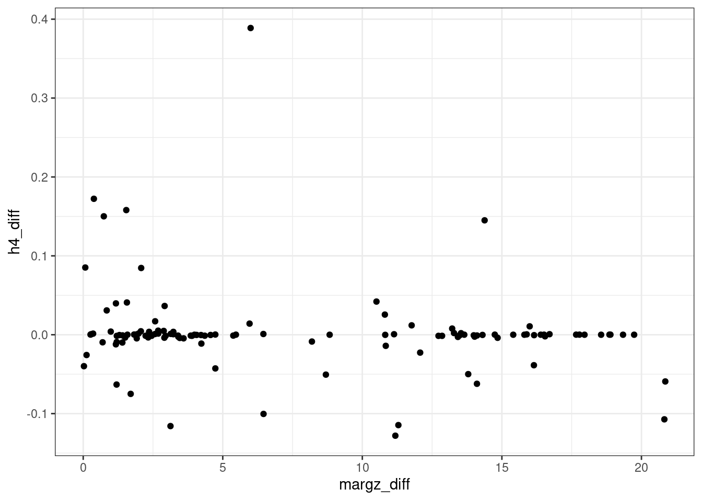
method_comparison_data |>
mutate(
h4_non_unif = max(h4_non_unif),
h4_unif = max(h4_unif)
) |>
filter(h4_unif <= 0.6 & h4_non_unif > 0.6)# A tibble: 2 × 12
# Rowwise:
trait1 trait2 block tss gene1 expr_hit hit1.margz hit2.margz coloc_unif
<chr> <chr> <chr> <dbl> <lgl> <chr> <dbl> <dbl> <list>
1 ASTCO_F… Schmi… chr2… 1.98e8 FALSE 2:19804… -5.01 -11.5 <named list>
2 Bossini… VIT_J… chr4… 1.01e8 TRUE 4:10144… -8.15 -5.03 <named list>
# ℹ 3 more variables: coloc_non_unif <list>, h4_unif <dbl>, h4_non_unif <dbl>method_comparison_data |>
mutate(
h4_non_unif = max(h4_non_unif),
h4_unif = max(h4_unif)
) |>
mutate(h4_diff = h4_unif - h4_non_unif) |>
ggplot(aes(h4_diff)) +
geom_histogram(binwidth = 0.005)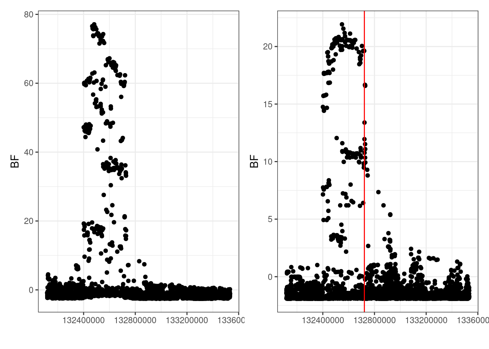
method_comparison_data |>
mutate(
h4_non_unif = max(h4_non_unif),
h4_unif = max(h4_unif)
) |>
mutate(h4_diff = h4_unif - h4_non_unif) |>
mutate(abs_h4_diff = abs(h4_diff)) |>
arrange(desc(abs_h4_diff)) |>
select(trait1, trait2, h4_unif, h4_non_unif, block, expr_hit, gene1, tss)# A tibble: 117 × 8
# Rowwise:
trait1 trait2 h4_unif h4_non_unif block expr_hit gene1 tss
<chr> <chr> <dbl> <dbl> <chr> <chr> <lgl> <dbl>
1 CCL19_Zhao_37563310_1… GENCO… 0.805 0.416 chr3… 3:13254… FALSE 1.33e8
2 CD_DeLange_28067908_1… GTEx_… 0.283 0.110 chr2… 2:24877… FALSE 2.48e7
3 AITD_Saevarsdottir_32… Quach… 0.159 0.00121 chr3… 3:10615… FALSE 1.06e8
4 Schmiedel_2018_ge_CD8… UC_De… 0.413 0.262 chr2… 2:43579… TRUE 4.32e7
5 Alasoo_2018_ge_macrop… CD_De… 0.281 0.136 chr2… 2:24888… TRUE 2.49e7
6 Lepik_2017_ge_blood.E… UC_De… 0.240 0.368 chr2… 2:43235… TRUE 4.32e7
7 Bossini-Castillo_2019… VIT_J… 0.590 0.705 chr4… 4:10144… TRUE 1.01e8
8 Nedelec_2016_ge_macro… UC_De… 0.278 0.392 chr2… 2:43274… TRUE 4.32e7
9 Quach_2016_ge_monocyt… TWEAK… 0.691 0.798 chr3… 3:98687… TRUE 9.87e7
10 ASTCO_Ferreira_309297… Schmi… 0.513 0.613 chr2… 2:19804… FALSE 1.98e8
# ℹ 107 more rowssnps1 <- colnames(BF[["chr2_block13"]][["CD_DeLange_28067908_1-hg38.tsv.gz"]])
snps2 <- colnames(BF[["chr2_block13"]][["GTEx_ge_blood.ENSG00000138092"]])
isnps <- intersect(snps1, snps2)
filter(hg38_data, ensembl_gene_id == "ENSG00000138092")# A tibble: 1 × 2
ensembl_gene_id tss
<chr> <dbl>
1 ENSG00000138092 24793445plot_bfs(BF[["chr2_block13"]][["CD_DeLange_28067908_1-hg38.tsv.gz"]], isnps,
tss = 24793445) +
plot_bfs(BF[["chr2_block13"]][["GTEx_ge_blood.ENSG00000138092"]], isnps) +
plot_bfs(BF[["chr2_block13"]][["GTEx_ge_blood.ENSG00000138092"]], isnps,
with_prior = TRUE) +
plot_bfs(BF[["chr2_block13"]][["GTEx_ge_blood.ENSG00000138092"]], isnps,
tss = 24793445, with_prior = TRUE) +
plot_bfs(BF[["chr2_block13"]][["GTEx_ge_blood.ENSG00000138092"]], isnps,
tss = 24900000, with_prior = TRUE) +
plot_bfs(BF[["chr2_block13"]][["GTEx_ge_blood.ENSG00000138092"]], isnps,
tss = 24877299, with_prior = TRUE)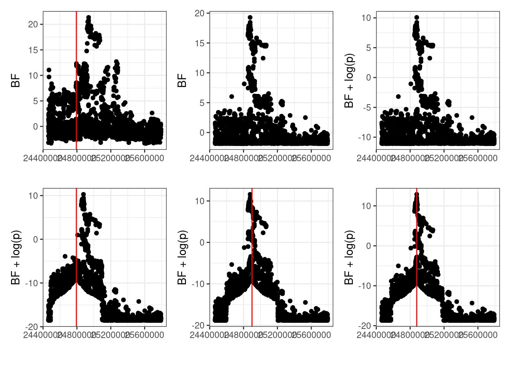
sum_bfs <- as.matrix(
BF[["chr2_block13"]][["CD_DeLange_28067908_1-hg38.tsv.gz"]][, isnps] +
BF[["chr2_block13"]][["GTEx_ge_blood.ENSG00000138092"]][, isnps],
) |>
t()
plot_bfs(BF[["chr2_block13"]][["CD_DeLange_28067908_1-hg38.tsv.gz"]], isnps) +
plot_bfs(BF[["chr2_block13"]][["GTEx_ge_blood.ENSG00000138092"]], isnps) +
plot_bfs(sum_bfs, isnps) +
geom_vline(xintercept = 24877299, colour = "red") +
geom_vline(xintercept = 24793445, colour = "blue")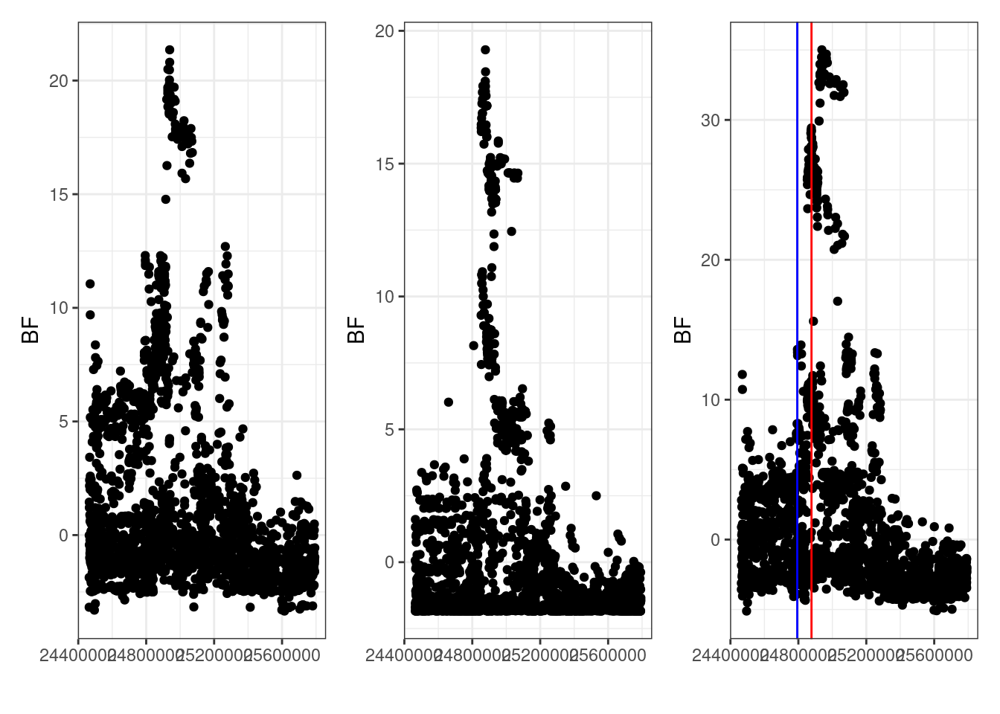
devtools::load_all("~/coloc")ℹ Loading coloc
This is coloc version 6.0.0coloc.bf_bf(
BF[["chr3_block79"]][["CCL19_Zhao_37563310_1-hg38.tsv.gz"]],
BF[["chr3_block79"]][["GENCORD_ge_fibroblast.ENSG00000113971"]],
tss2 = 132721707
)[1] 0.00000 69.80057 16.34819 86.14734 85.80811$summary
nsnps hit1 hit2 PP.H0.abf PP.H1.abf PP.H2.abf
1: 4334 3:132481875 3:132548460 2.25477e-38 4.646287e-08 2.838116e-31
PP.H3.abf PP.H4.abf idx1 idx2
1: 0.5840039 0.415996 1 1
$results
snp SNP.PP.H4.abf
1: 3:132118426 8.629663e-45
2: 3:132118446 8.310292e-45
3: 3:132118614 9.514296e-45
4: 3:132118988 4.493891e-45
5: 3:132119156 8.550215e-45
---
4330: 3:133532332 2.345415e-44
4331: 3:133532512 6.296131e-45
4332: 3:133532565 2.300478e-45
4333: 3:133532936 7.695754e-45
4334: 3:133533254 5.370701e-45
$priors
p1 p2 p12
1e-04 1e-04 5e-06 coloc.bf_bf(
BF[["chr3_block79"]][["CCL19_Zhao_37563310_1-hg38.tsv.gz"]],
BF[["chr3_block79"]][["GENCORD_ge_fibroblast.ENSG00000113971"]],
)$summary
nsnps hit1 hit2 PP.H0.abf PP.H1.abf PP.H2.abf
1: 4334 3:132481875 3:132548460 1.390379e-38 2.865081e-08 9.55052e-32
PP.H3.abf PP.H4.abf idx1 idx2
1: 0.195193 0.804807 1 1
$results
snp SNP.PP.H4.abf
1: 3:132118426 8.629663e-45
2: 3:132118446 8.310292e-45
3: 3:132118614 9.514296e-45
4: 3:132118988 4.493891e-45
5: 3:132119156 8.550215e-45
---
4330: 3:133532332 2.345415e-44
4331: 3:133532512 6.296131e-45
4332: 3:133532565 2.300478e-45
4333: 3:133532936 7.695754e-45
4334: 3:133533254 5.370701e-45
$priors
p1 p2 p12
1e-04 1e-04 5e-06 snps1 <- colnames(BF[["chr3_block79"]][["CCL19_Zhao_37563310_1-hg38.tsv.gz"]])
snps2 <- colnames(BF[["chr3_block79"]][["GENCORD_ge_fibroblast.ENSG00000113971"]])
isnps <- intersect(snps1, snps2)
bps <- vapply(strsplit(isnps, ":"), \(x) as.numeric(x[[2]]), numeric(1))
ind <- seq(1, length(bps), by = 100)
h4 <- numeric(length(ind))
h3 <- numeric(length(ind))
for (i in seq_along(ind)) {
coloc_out <- coloc.bf_bf(
BF[["chr3_block79"]][["CCL19_Zhao_37563310_1-hg38.tsv.gz"]],
BF[["chr3_block79"]][["GENCORD_ge_fibroblast.ENSG00000113971"]],
tss2 = bps[[ind[[i]]]]
)
h4[[i]] <- coloc_out$summary[, "PP.H4.abf"][[1]]
h3[[i]] <- coloc_out$summary[, "PP.H3.abf"][[1]]
}[1] 0.000000 69.800573 9.740336 79.536644 80.296044
[1] 0.00000 69.80057 10.44712 80.24619 79.96636
[1] 0.00000 69.80057 11.77456 81.54494 84.27481
[1] 0.00000 69.80057 12.65866 82.43425 84.97157
[1] 0.00000 69.80057 12.95632 82.73476 85.14988
[1] 0.00000 69.80057 13.85351 83.63457 85.92244
[1] 0.00000 69.80057 14.09584 83.88106 85.92689
[1] 0.00000 69.80057 14.48215 84.26733 86.31576
[1] 0.00000 69.80057 14.67456 84.46071 86.44366
[1] 0.00000 69.80057 14.88663 84.67220 86.69493
[1] 0.00000 69.80057 15.24733 85.03225 87.09733
[1] 0.00000 69.80057 16.64954 86.43367 88.54872
[1] 0.00000 69.80057 17.87724 87.65481 90.10885
[1] 0.00000 69.80057 17.97374 87.76883 88.78048
[1] 0.00000 69.80057 17.82080 87.61905 87.77003
[1] 0.00000 69.80057 17.67769 87.47710 86.93476
[1] 0.00000 69.80057 16.45347 86.25275 85.82009
[1] 0.00000 69.80057 15.15981 84.95839 84.95162
[1] 0.00000 69.80057 14.43821 84.23812 83.14481
[1] 0.00000 69.80057 13.94752 83.74791 81.35655
[1] 0.00000 69.80057 13.57480 83.37522 80.79317
[1] 0.00000 69.80057 13.02129 82.82179 79.59110
[1] 0.00000 69.80057 12.63274 82.43320 79.51504
[1] 0.00000 69.80057 12.00757 81.80795 79.45590
[1] 0.00000 69.80057 11.43111 81.23136 79.39625
[1] 0.00000 69.80057 10.88615 80.68610 79.51975
[1] 0.00000 69.80057 10.58839 80.38807 79.59180
[1] 0.000000 69.800573 9.650085 79.448278 79.623577
[1] 0.000000 69.800573 8.522677 78.315039 79.731580
[1] 0.000000 69.800573 8.422053 78.214415 79.630959
[1] 0.00000 69.80057 8.53563 78.32799 79.74453
[1] 0.000000 69.800573 8.704544 78.496905 79.913468
[1] 0.000000 69.800573 8.614112 78.406473 79.823054
[1] 0.000000 69.800573 8.606268 78.398629 79.815217
[1] 0.000000 69.800573 8.582316 78.374677 79.791268
[1] 0.000000 69.800573 8.586892 78.379253 79.795845
[1] 0.000000 69.800573 8.527805 78.320166 79.736759
[1] 0.00000 69.80057 8.60896 78.40132 79.81792
[1] 0.000000 69.800573 8.537244 78.329605 79.746198
[1] 0.000000 69.800573 8.545502 78.337863 79.754453
[1] 0.000000 69.800573 8.403944 78.196305 79.612892
[1] 0.000000 69.800573 8.619545 78.411906 79.828492
[1] 0.000000 69.800573 8.741842 78.534203 79.950799
[1] 0.000000 69.800573 8.951691 78.744052 80.160650h3_data <- tibble(h3, tss = bps[ind])
h3_data |>
ggplot(aes(tss, h3)) +
geom_point() +
theme_bw()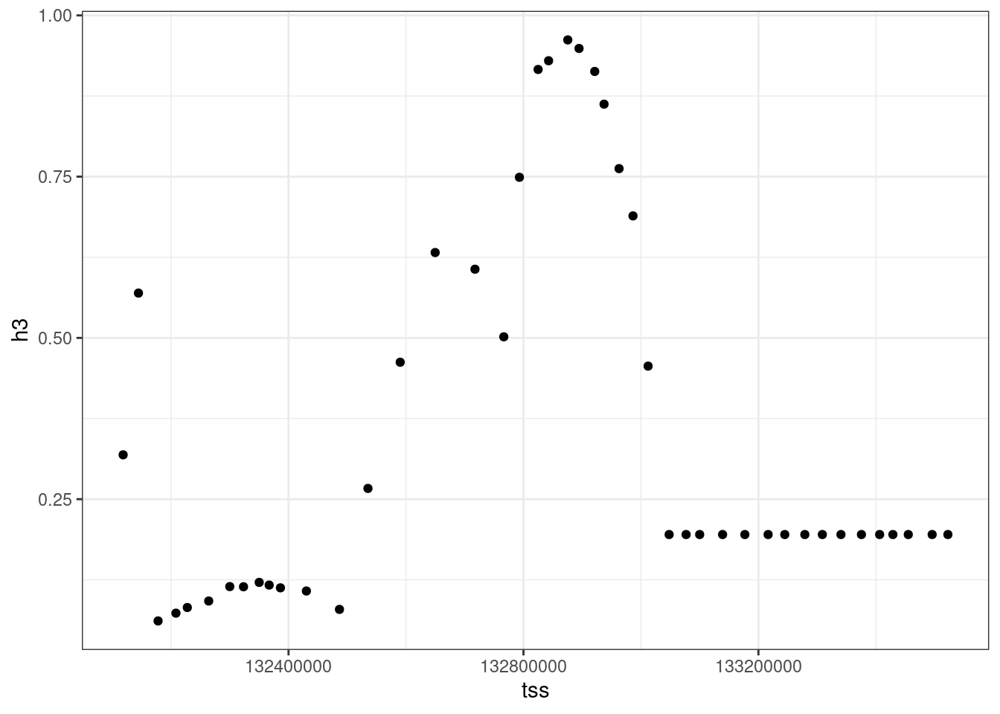
h4_data <- tibble(h4, tss = bps[ind])
h4_data |>
ggplot(aes(tss, h4)) +
geom_point() +
theme_bw()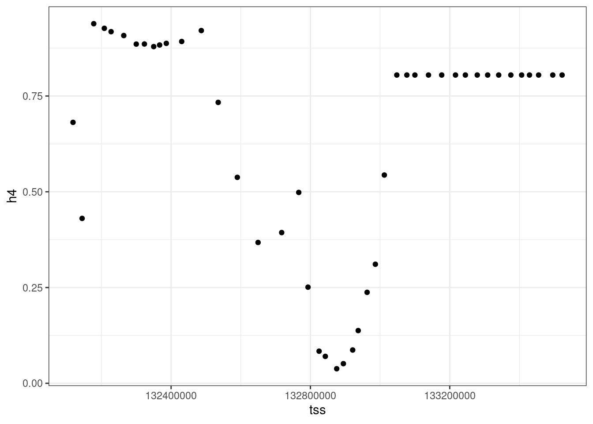
lH3 <- numeric(length(ind))
lH4 <- numeric(length(ind))
H3 <- numeric(length(ind))
H4 <- numeric(length(ind))
rho <- numeric(length(ind))
for (i in seq_along(ind)) {
p1_vec <- rep(1e-4, length(isnps))
p2_vec <- coloc:::calculate_non_uniform_p(bps, bps[[ind[[i]]]])
p12_vec <- p1_vec * p2_vec * (1e-5 / (1e-4 * 1e-4))
l1 <- BF[["chr3_block79"]][["CCL19_Zhao_37563310_1-hg38.tsv.gz"]][, isnps]
l2 <- BF[["chr3_block79"]][["GENCORD_ge_fibroblast.ENSG00000113971"]][, isnps]
lsum <- l1 + l2
lH3_abf <- coloc:::logdiff(coloc:::logsum(log(p1_vec) + l1) +
coloc:::logsum(log(p2_vec) + l2),
coloc:::logsum(log(p1_vec) + log(p2_vec) + lsum))
lH4_abf <- coloc:::logsum(log(p12_vec) + lsum)
rho[[i]] <- cor(log(p12_vec), lsum)
lH3[[i]] <- lH3_abf
lH4[[i]] <- lH4_abf
H4[[i]] <- exp(lH4[[i]] - coloc:::logsum(c(lH3[[i]], lH4[[i]])))
H3[[i]] <- exp(lH3[[i]] - coloc:::logsum(c(lH3[[i]], lH4[[i]])))
}
highlight_tss <- c(132486727, 132535246, 132590143, 132649677)
tibble(tss = bps[ind], lH3) |>
mutate(highlight = tss %in% highlight_tss) |>
ggplot(aes(tss, lH3, col = highlight)) +
geom_point() +
coord_cartesian(ylim = c(83, 95)) +
tibble(tss = bps[ind], lH4) |>
mutate(highlight = tss %in% highlight_tss) |>
ggplot(aes(tss, lH4, col = highlight)) +
geom_point() +
coord_cartesian(ylim = c(83, 95)) +
tibble(tss = bps[ind], H4) |>
mutate(highlight = tss %in% highlight_tss) |>
ggplot(aes(tss, H4, col = highlight)) +
geom_point() +
plot_layout(guides = "collect")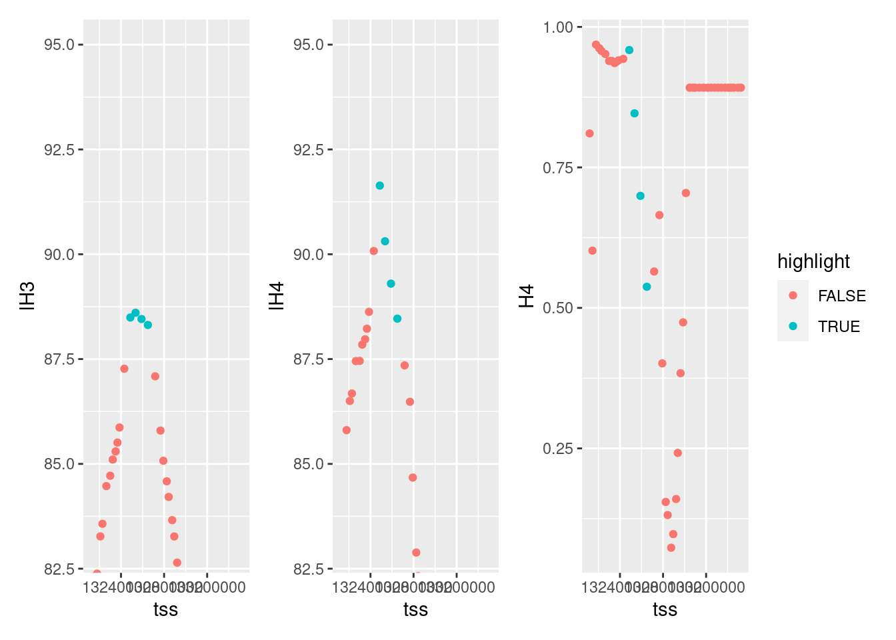
tibble(tss = bps[ind], rho) |>
mutate(highlight = tss %in% highlight_tss) |>
ggplot(aes(tss, rho, col = highlight)) +
geom_point() +
plot_layout(guides = "collect")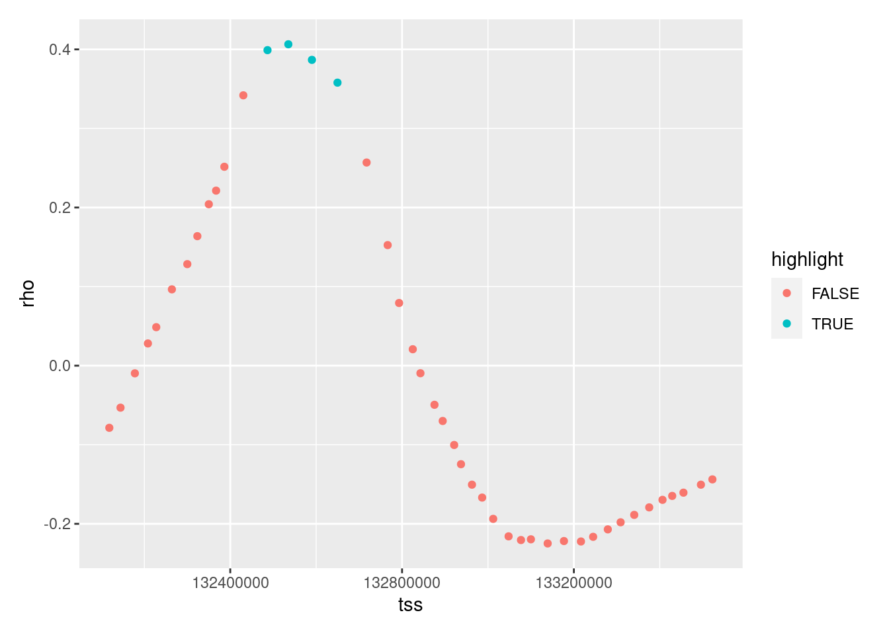
sum_bfs <- as.matrix(
BF[["chr3_block79"]][["CCL19_Zhao_37563310_1-hg38.tsv.gz"]][, isnps] +
BF[["chr3_block79"]][["GENCORD_ge_fibroblast.ENSG00000113971"]][, isnps],
) |>
t()
plot_bfs(BF[["chr3_block79"]][["CCL19_Zhao_37563310_1-hg38.tsv.gz"]], isnps) +
geom_vline(aes(xintercept = tss, colour = h4), h4_data, linewidth = 1) +
scale_color_distiller(palette = 1, direction = 1, type = "div") +
plot_bfs(BF[["chr3_block79"]][["GENCORD_ge_fibroblast.ENSG00000113971"]], isnps) +
geom_vline(aes(xintercept = tss, colour = h4), h4_data, linewidth = 1) +
scale_color_distiller(palette = 1, direction = 1, type = "div") +
plot_bfs(sum_bfs, isnps) +
geom_vline(aes(xintercept = tss, colour = h4), h4_data, linewidth = 1) +
scale_color_distiller(palette = 1, direction = 1, type = "div") +
plot_layout(guides = "collect")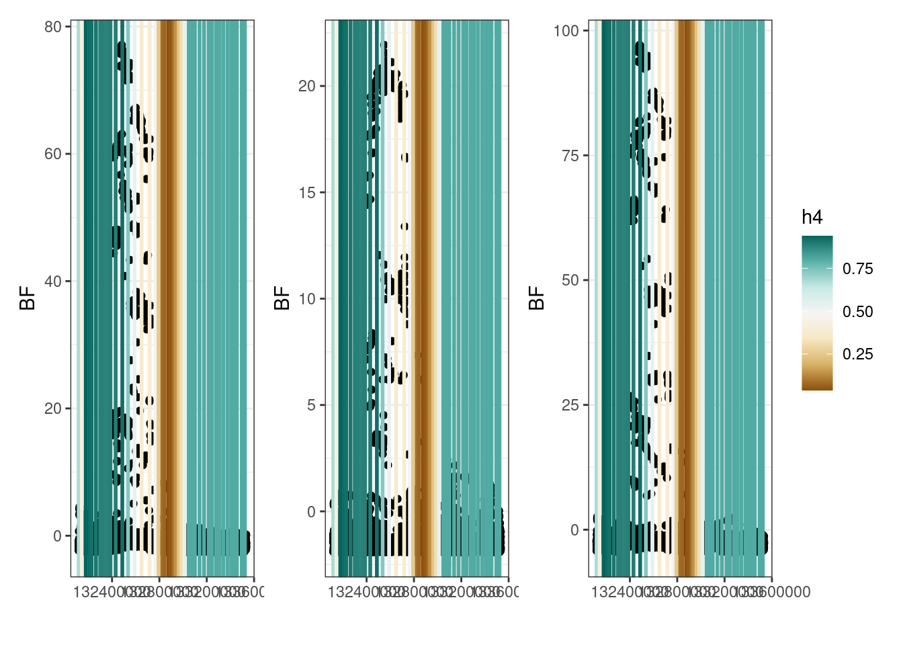
tibble(bf = sum_bfs[1, ], bps = bps) |>
mutate(g = rep(seq(1, n(), by = 100), each = 100, length.out = n())) |>
summarise(bf = mean(bf), bps = median(bps), .by = g) |>
ggplot(aes(bps, bf)) +
geom_point()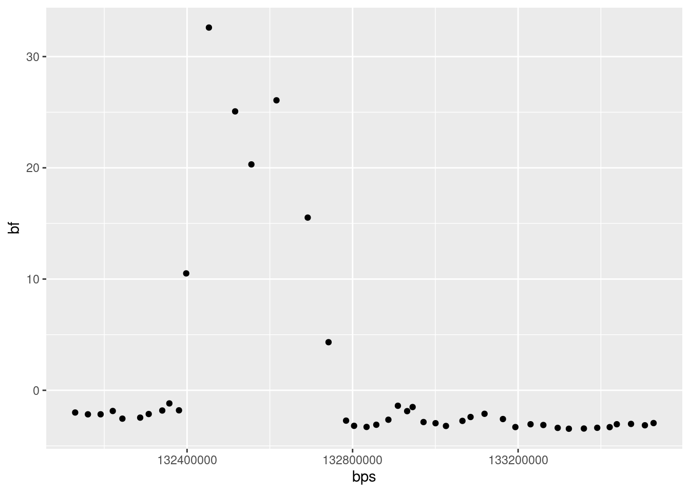
x <- seq(0.05, 0.95, by = 0.05)
y <- 0.5
plot(x, x / (x + y))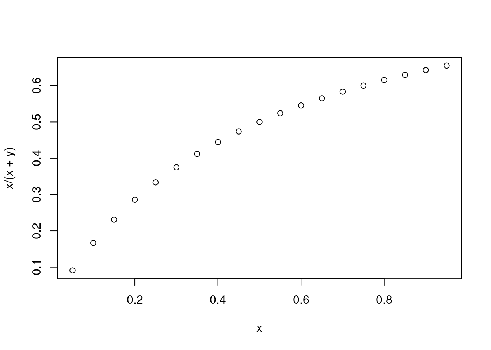
devtools::load_all("~/coloc")ℹ Loading coloc
This is coloc version 6.0.0coloc.bf_bf(
BF[["chr2_block13"]][["CD_DeLange_28067908_1-hg38.tsv.gz"]],
BF[["chr2_block13"]][["GTEx_ge_blood.ENSG00000138092"]],
tss2 = 24793445
)[1] 0.00000 13.85114 12.24812 26.09901 24.01215$summary
nsnps hit1 hit2 PP.H0.abf PP.H1.abf PP.H2.abf PP.H3.abf
1: 2849 2:24938367 2:24877298 4.116654e-12 4.265974e-06 8.586896e-07 0.8896154
PP.H4.abf idx1 idx2
1: 0.1103795 1 1
$results
snp SNP.PP.H4.abf
1: 2:24464173 2.059807e-18
2: 2:24464227 3.235817e-18
3: 2:24464430 1.146734e-17
4: 2:24464788 6.512652e-17
5: 2:24465186 1.771346e-16
---
2845: 2:25791210 2.314571e-18
2846: 2:25791445 1.811371e-17
2847: 2:25791483 8.445464e-18
2848: 2:25792775 7.180295e-18
2849: 2:25792886 9.785211e-18
$priors
p1 p2 p12
1e-04 1e-04 5e-06 coloc.bf_bf(
BF[["chr2_block13"]][["CD_DeLange_28067908_1-hg38.tsv.gz"]],
BF[["chr2_block13"]][["GTEx_ge_blood.ENSG00000138092"]],
tss2 = 24877299
)$summary[, "PP.H4.abf"][1] 0.00000 13.85114 14.51656 28.36759 25.39527 PP.H4.abf
1: 0.04869198snps1 <- colnames(BF[["chr2_block13"]][["CD_DeLange_28067908_1-hg38.tsv.gz"]])
snps2 <- colnames(BF[["chr2_block13"]][["GTEx_ge_blood.ENSG00000138092"]])
isnps <- intersect(snps1, snps2)
bps <- vapply(strsplit(isnps, ":"), \(x) as.numeric(x[[2]]), numeric(1))
ind <- seq(1, length(bps), by = 100)
h4 <- numeric(length(ind))
for (i in seq_along(ind)) {
h4[[i]] <- coloc.bf_bf(
BF[["chr2_block13"]][["CD_DeLange_28067908_1-hg38.tsv.gz"]],
BF[["chr2_block13"]][["GTEx_ge_blood.ENSG00000138092"]],
tss2 = bps[[ind[[i]]]]
)$summary[, "PP.H4.abf"][[1]]
}[1] 0.000000 13.851140 5.246136 19.096490 18.162873
[1] 0.000000 13.851140 4.827003 18.677359 17.741980
[1] 0.000000 13.851140 4.766937 18.617294 17.679866
[1] 0.00000 13.85114 10.02287 23.87400 18.37687
[1] 0.00000 13.85114 10.64133 24.49231 21.93479
[1] 0.00000 13.85114 11.00390 24.85464 23.24417
[1] 0.00000 13.85114 11.47244 25.32319 23.67838
[1] 0.00000 13.85114 12.13869 25.98954 24.06170
[1] 0.00000 13.85114 12.69013 26.54104 24.37365
[1] 0.00000 13.85114 13.38559 27.23656 24.78228
[1] 0.00000 13.85114 14.51138 28.36242 25.39583
[1] 0.00000 13.85114 13.51741 27.36810 25.86155
[1] 0.00000 13.85114 13.14113 26.99053 26.84939
[1] 0.00000 13.85114 12.48992 26.33751 26.91169
[1] 0.00000 13.85114 11.66910 25.51717 25.94907
[1] 0.00000 13.85114 11.47280 25.32152 25.51381
[1] 0.00000 13.85114 10.76922 24.61863 24.47454
[1] 0.00000 13.85114 10.10214 23.95140 23.89215
[1] 0.000000 13.851140 8.209816 22.051867 23.570411
[1] 0.000000 13.851140 6.838555 20.683923 21.746784
[1] 0.000000 13.851140 6.189609 20.037271 20.592484
[1] 0.000000 13.851140 5.100927 18.950491 18.713109
[1] 0.000000 13.851140 5.031288 18.881641 17.949567
[1] 0.000000 13.851140 5.262667 19.113020 18.181340
[1] 0.000000 13.851140 5.464444 19.314796 18.383339
[1] 0.000000 13.851140 4.915624 18.765977 17.834342
[1] 0.00000 13.85114 4.80967 18.66002 17.72833
[1] 0.000000 13.851140 4.935689 18.786042 17.854312
[1] 0.00000 13.85114 5.00522 18.85557 17.92387h4_data <- tibble(h4, tss = bps[ind])
h4_data |>
ggplot(aes(tss, h4)) +
geom_point() +
theme_bw()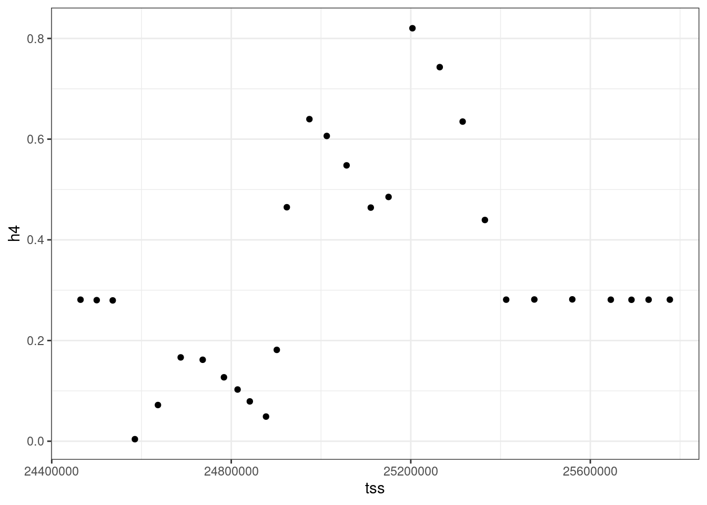
Lower Pr(H4) with the non-uniform priors.
snps1 <- colnames(BF[["chr3_block79"]][["CCL19_Zhao_37563310_1-hg38.tsv.gz"]])
snps2 <- colnames(BF[["chr3_block79"]][["GENCORD_ge_fibroblast.ENSG00000113971"]])
isnps <- intersect(snps1, snps2)
hg38_data |>
filter(ensembl_gene_id == "ENSG00000113971")# A tibble: 1 × 2
ensembl_gene_id tss
<chr> <dbl>
1 ENSG00000113971 132721707plot_bfs(BF[["chr3_block79"]][["CCL19_Zhao_37563310_1-hg38.tsv.gz"]], isnps) +
plot_bfs(BF[["chr3_block79"]][["GENCORD_ge_fibroblast.ENSG00000113971"]], isnps,
tss = 132721707) +
plot_bfs(BF[["chr3_block79"]][["GENCORD_ge_fibroblast.ENSG00000113971"]], isnps,
tss = 132721707, with_prior = TRUE)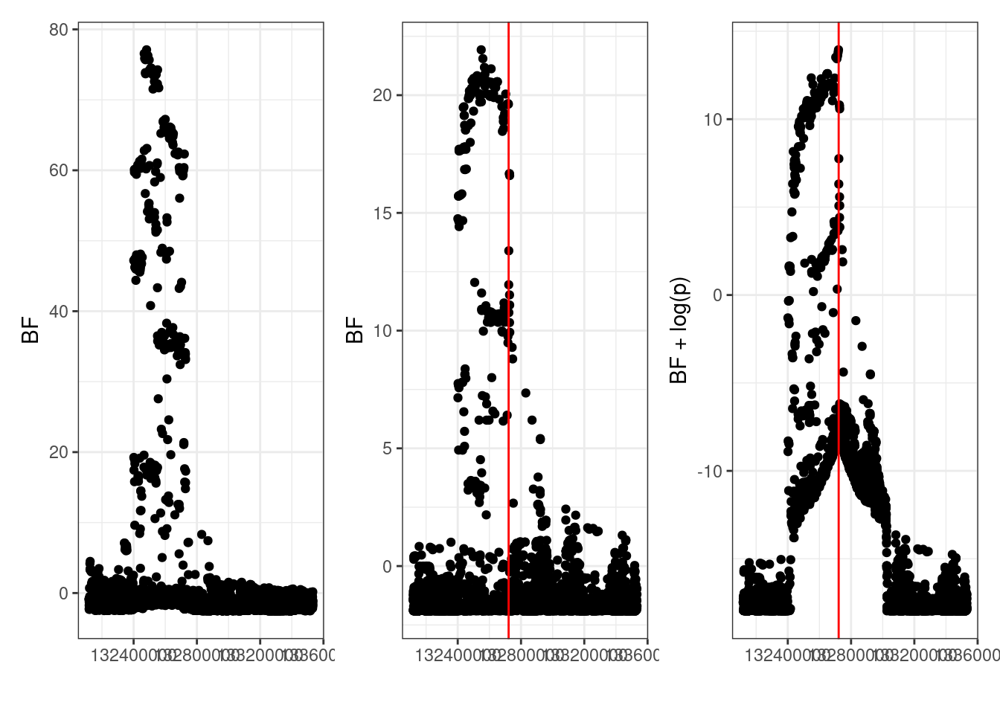
plot_bfs(BF[["chr3_block79"]][["GENCORD_ge_fibroblast.ENSG00000113971"]], isnps,
tss = 132721707) +
plot_bfs(BF[["chr3_block79"]][["GENCORD_ge_fibroblast.ENSG00000113971"]], isnps,
tss = 132721707, with_prior = TRUE) +
plot_bfs(BF[["chr3_block79"]][["GENCORD_ge_fibroblast.ENSG00000113971"]], isnps,
with_prior = TRUE) 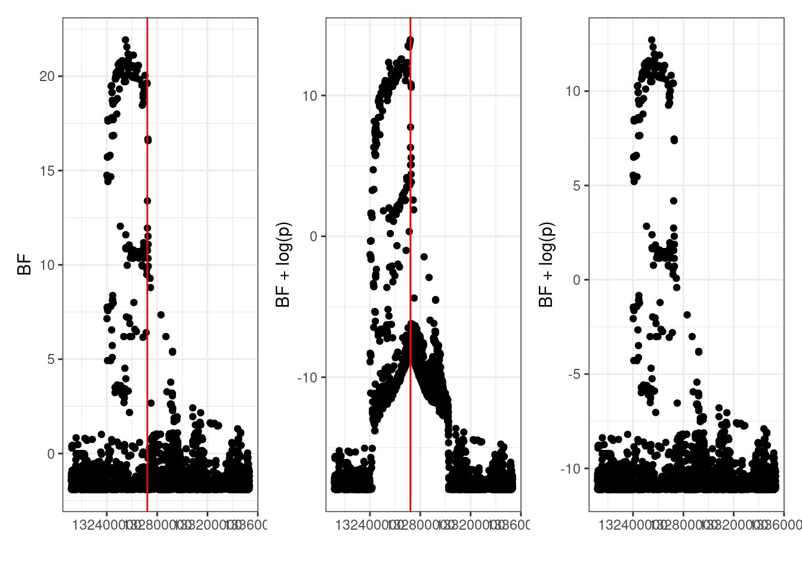
coloc.bf_bf(
BF[["chr3_block79"]][["CCL19_Zhao_37563310_1-hg38.tsv.gz"]],
BF[["chr3_block79"]][["GENCORD_ge_fibroblast.ENSG00000113971"]]
)$summary
nsnps hit1 hit2 PP.H0.abf PP.H1.abf PP.H2.abf
1: 4334 3:132481875 3:132548460 1.390379e-38 2.865081e-08 9.55052e-32
PP.H3.abf PP.H4.abf idx1 idx2
1: 0.195193 0.804807 1 1
$results
snp SNP.PP.H4.abf
1: 3:132118426 8.629663e-45
2: 3:132118446 8.310292e-45
3: 3:132118614 9.514296e-45
4: 3:132118988 4.493891e-45
5: 3:132119156 8.550215e-45
---
4330: 3:133532332 2.345415e-44
4331: 3:133532512 6.296131e-45
4332: 3:133532565 2.300478e-45
4333: 3:133532936 7.695754e-45
4334: 3:133533254 5.370701e-45
$priors
p1 p2 p12
1e-04 1e-04 5e-06 coloc.bf_bf(
BF[["chr3_block79"]][["CCL19_Zhao_37563310_1-hg38.tsv.gz"]],
BF[["chr3_block79"]][["GENCORD_ge_fibroblast.ENSG00000113971"]],
tss2 = 132721707
) [1] 0.00000 69.80057 16.34819 86.14734 85.80811$summary
nsnps hit1 hit2 PP.H0.abf PP.H1.abf PP.H2.abf
1: 4334 3:132481875 3:132548460 2.25477e-38 4.646287e-08 2.838116e-31
PP.H3.abf PP.H4.abf idx1 idx2
1: 0.5840039 0.415996 1 1
$results
snp SNP.PP.H4.abf
1: 3:132118426 8.629663e-45
2: 3:132118446 8.310292e-45
3: 3:132118614 9.514296e-45
4: 3:132118988 4.493891e-45
5: 3:132119156 8.550215e-45
---
4330: 3:133532332 2.345415e-44
4331: 3:133532512 6.296131e-45
4332: 3:133532565 2.300478e-45
4333: 3:133532936 7.695754e-45
4334: 3:133533254 5.370701e-45
$priors
p1 p2 p12
1e-04 1e-04 5e-06 coloc.bf_bf(
BF[["chr3_block79"]][["CCL19_Zhao_37563310_1-hg38.tsv.gz"]],
BF[["chr3_block79"]][["GENCORD_ge_fibroblast.ENSG00000113971"]],
tss2 = 132500000
) [1] 0.00000 69.80057 17.96071 87.74686 89.72975$summary
nsnps hit1 hit2 PP.H0.abf PP.H1.abf PP.H2.abf
1: 4334 3:132481875 3:132548460 9.43735e-40 1.944706e-09 5.957796e-32
PP.H3.abf PP.H4.abf idx1 idx2
1: 0.1210112 0.8789888 1 1
$results
snp SNP.PP.H4.abf
1: 3:132118426 8.629663e-45
2: 3:132118446 8.310292e-45
3: 3:132118614 9.514296e-45
4: 3:132118988 4.493891e-45
5: 3:132119156 8.550215e-45
---
4330: 3:133532332 2.345415e-44
4331: 3:133532512 6.296131e-45
4332: 3:133532565 2.300478e-45
4333: 3:133532936 7.695754e-45
4334: 3:133533254 5.370701e-45
$priors
p1 p2 p12
1e-04 1e-04 5e-06 Higher Pr(H4) with the non-uniform priors.
snps1 <- colnames(BF[["chr2_block25"]][["Lepik_2017_ge_blood.ENSG00000234936"]])
snps2 <- colnames(BF[["chr2_block25"]][["UC_DeLange_28067908_1-hg38.tsv.gz"]])
isnps <- intersect(snps1, snps2)
hg38_data |>
filter(ensembl_gene_id == "ENSG00000234936")# A tibble: 1 × 2
ensembl_gene_id tss
<chr> <dbl>
1 ENSG00000234936 43229573plot_bfs(BF[["chr2_block25"]][["Lepik_2017_ge_blood.ENSG00000234936"]], isnps) +
plot_bfs(BF[["chr2_block25"]][["UC_DeLange_28067908_1-hg38.tsv.gz"]], isnps,
tss = 43229573) +
plot_bfs(BF[["chr2_block25"]][["UC_DeLange_28067908_1-hg38.tsv.gz"]], isnps,
tss = 43229573, with_prior = TRUE)
coloc.bf_bf(
BF[["chr2_block25"]][["Lepik_2017_ge_blood.ENSG00000234936"]],
BF[["chr2_block25"]][["UC_DeLange_28067908_1-hg38.tsv.gz"]],
tss2 = 43229573
)[1] 0.000000 9.511969 2.097547 11.599173 13.247492$summary
nsnps hit1 hit2 PP.H0.abf PP.H1.abf PP.H2.abf PP.H3.abf
1: 3178 2:43235339 2:43414488 1.450991e-06 0.01961824 1.182001e-05 0.1581691
PP.H4.abf idx1 idx2
1: 0.8221994 1 1
$results
snp SNP.PP.H4.abf
1: 2:43083344 7.933419e-12
2: 2:43084104 1.492962e-11
3: 2:43084421 6.957436e-11
4: 2:43085497 1.379446e-11
5: 2:43085671 6.344360e-12
---
3174: 2:44086053 2.639381e-11
3175: 2:44086086 2.532391e-11
3176: 2:44086248 6.257888e-12
3177: 2:44086401 8.770713e-11
3178: 2:44086664 1.059344e-11
$priors
p1 p2 p12
1e-04 1e-04 5e-06 No change, high Pr(H4)
snps1 <- colnames(BF[["chr2_block130"]][["GENCORD_ge_T-cell.ENSG00000115009"]])
snps2 <- colnames(BF[["chr2_block130"]][["ASTCO_Ferreira_30929738_1-hg38.tsv.gz"]])
isnps <- intersect(snps1, snps2)
hg38_data |>
filter(ensembl_gene_id == "ENSG00000115009")# A tibble: 1 × 2
ensembl_gene_id tss
<chr> <dbl>
1 ENSG00000115009 227813842.plot_bfs(BF[["chr2_block130"]][["GENCORD_ge_T-cell.ENSG00000115009"]], isnps,
tss = 227813842) +
plot_bfs(BF[["chr2_block130"]][["ASTCO_Ferreira_30929738_1-hg38.tsv.gz"]], isnps,
tss = 227813842) +
plot_bfs(BF[["chr2_block130"]][["ASTCO_Ferreira_30929738_1-hg38.tsv.gz"]], isnps,
tss = 227813842, with_prior = TRUE) 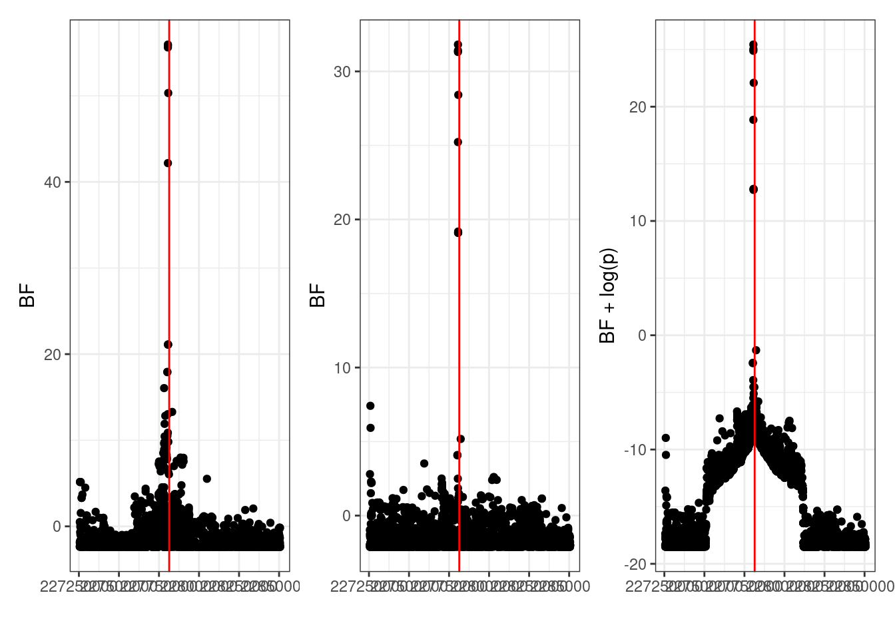
coloc.bf_bf(
BF[["chr2_block130"]][["ASTCO_Ferreira_30929738_1-hg38.tsv.gz"]],
BF[["chr2_block130"]][["GENCORD_ge_T-cell.ENSG00000115009"]],
)$summary
nsnps hit1 hit2 PP.H0.abf PP.H1.abf PP.H2.abf
1: 4740 2:227805721 2:227805859 7.717351e-34 1.165810e-23 3.990357e-13
2: 4740 2:227887158 2:227805859 3.630766e-24 1.930336e-21 1.877335e-03
PP.H3.abf PP.H4.abf idx1 idx2
1: 0.004036047 9.959640e-01 1 1
2: 0.998105112 1.755304e-05 2 1
$results
snp SNP.PP.H4.row1 SNP.PP.H4.row2
1: 2:227255202 5.168946e-41 1.841991e-26
2: 2:227255590 2.176152e-40 7.074883e-26
3: 2:227255715 7.856732e-40 3.204067e-25
4: 2:227256084 1.021424e-40 8.640170e-26
5: 2:227256385 1.061989e-38 5.376830e-25
---
4736: 2:228505642 6.660958e-41 2.373914e-26
4737: 2:228505810 4.590501e-41 2.082161e-26
4738: 2:228505829 6.031528e-41 2.368550e-26
4739: 2:228505851 5.050344e-41 1.859417e-26
4740: 2:228506071 4.461520e-40 1.666774e-25
$priors
p1 p2 p12
1e-04 1e-04 5e-06 coloc.bf_bf(
BF[["chr2_block130"]][["ASTCO_Ferreira_30929738_1-hg38.tsv.gz"]],
BF[["chr2_block130"]][["GENCORD_ge_T-cell.ENSG00000115009"]],
tss2 = 227813842
)[1] 0.00000 23.43838 50.51826 73.55436 79.06624
[1] 0.000000 6.276006 50.518259 56.794265 45.845926$summary
nsnps hit1 hit2 PP.H0.abf PP.H1.abf PP.H2.abf
1: 4740 2:227805721 2:227805859 4.573195e-35 6.908431e-25 3.981263e-13
2: 4740 2:227887158 2:227805859 2.156456e-25 1.146503e-22 1.877335e-03
PP.H3.abf PP.H4.abf idx1 idx2
1: 0.004022282 9.959777e-01 1 1
2: 0.998105111 1.755388e-05 2 1
$results
snp SNP.PP.H4.row1 SNP.PP.H4.row2
1: 2:227255202 5.168946e-41 1.841991e-26
2: 2:227255590 2.176152e-40 7.074883e-26
3: 2:227255715 7.856732e-40 3.204067e-25
4: 2:227256084 1.021424e-40 8.640170e-26
5: 2:227256385 1.061989e-38 5.376830e-25
---
4736: 2:228505642 6.660958e-41 2.373914e-26
4737: 2:228505810 4.590501e-41 2.082161e-26
4738: 2:228505829 6.031528e-41 2.368550e-26
4739: 2:228505851 5.050344e-41 1.859417e-26
4740: 2:228506071 4.461520e-40 1.666774e-25
$priors
p1 p2 p12
1e-04 1e-04 5e-06 coloc.bf_bf(
BF[["chr2_block130"]][["ASTCO_Ferreira_30929738_1-hg38.tsv.gz"]],
BF[["chr2_block130"]][["GENCORD_ge_T-cell.ENSG00000115009"]],
tss2 = 227500000
)[1] 0.00000 23.43838 40.42150 63.45874 68.96718
[1] 0.000000 6.276006 40.421502 46.697507 35.749121$summary
nsnps hit1 hit2 PP.H0.abf PP.H1.abf PP.H2.abf
1: 4740 2:227805721 2:227805859 1.112184e-30 1.680105e-20 3.990357e-13
2: 4740 2:227887158 2:227805859 5.232469e-21 2.781898e-18 1.877335e-03
PP.H3.abf PP.H4.abf idx1 idx2
1: 0.004036047 9.959640e-01 1 1
2: 0.998105112 1.755304e-05 2 1
$results
snp SNP.PP.H4.row1 SNP.PP.H4.row2
1: 2:227255202 5.168946e-41 1.841991e-26
2: 2:227255590 2.176152e-40 7.074883e-26
3: 2:227255715 7.856732e-40 3.204067e-25
4: 2:227256084 1.021424e-40 8.640170e-26
5: 2:227256385 1.061989e-38 5.376830e-25
---
4736: 2:228505642 6.660958e-41 2.373914e-26
4737: 2:228505810 4.590501e-41 2.082161e-26
4738: 2:228505829 6.031528e-41 2.368550e-26
4739: 2:228505851 5.050344e-41 1.859417e-26
4740: 2:228506071 4.461520e-40 1.666774e-25
$priors
p1 p2 p12
1e-04 1e-04 5e-06 Q: How to you make the ultimate colocalisation? Is the ‘sharpness’ of the peak important?
snps1 <- colnames(BF[["chr3_block79"]][["CCL19_Zhao_37563310_1-hg38.tsv.gz"]])
snps2 <- colnames(BF[["chr3_block79"]][["GENCORD_ge_fibroblast.ENSG00000113971"]])
isnps <- intersect(snps1, snps2)
plot_bfs(BF[["chr3_block79"]][["GENCORD_ge_fibroblast.ENSG00000113971"]], isnps,
tss = 132721707, with_prior = TRUE) 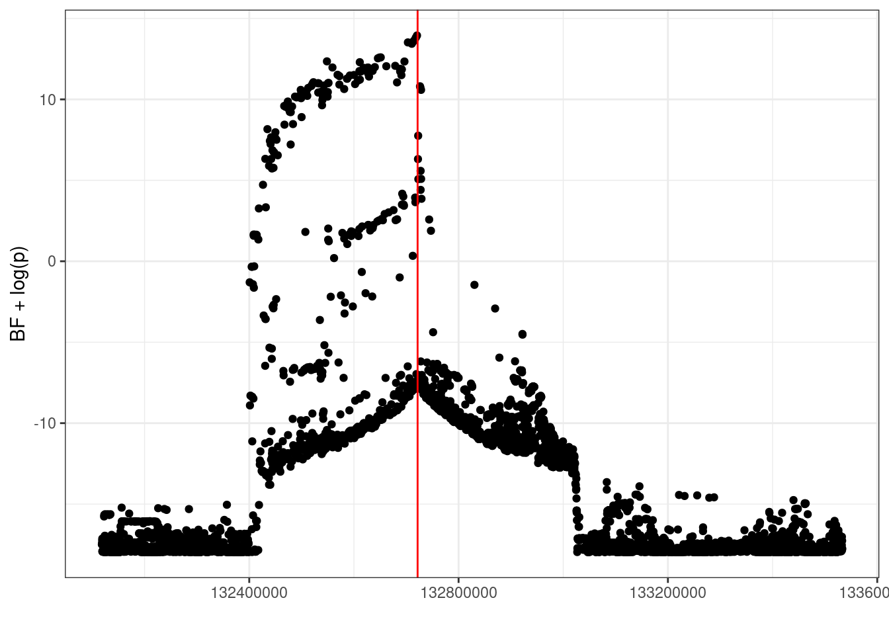
tss <- 132721707
snps <- isnps
bfs <- BF[["chr3_block79"]][["GENCORD_ge_fibroblast.ENSG00000113971"]]
bfs <- bfs[1, snps]
bps <- vapply(strsplit(snps, ":"), \(x) as.numeric(x[[2]]), numeric(1))
prior_vec <- 10^-4 * length(bps) * coloc:::calculate_non_uniform_p(bps, tss)
plot(prior_vec)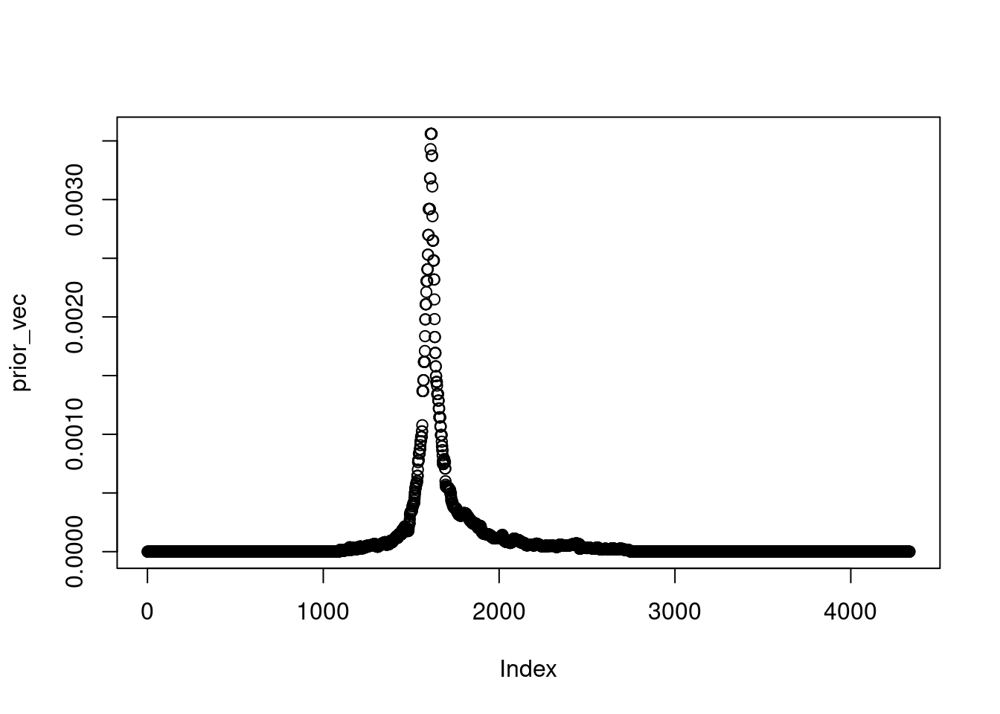
plot(log(prior_vec))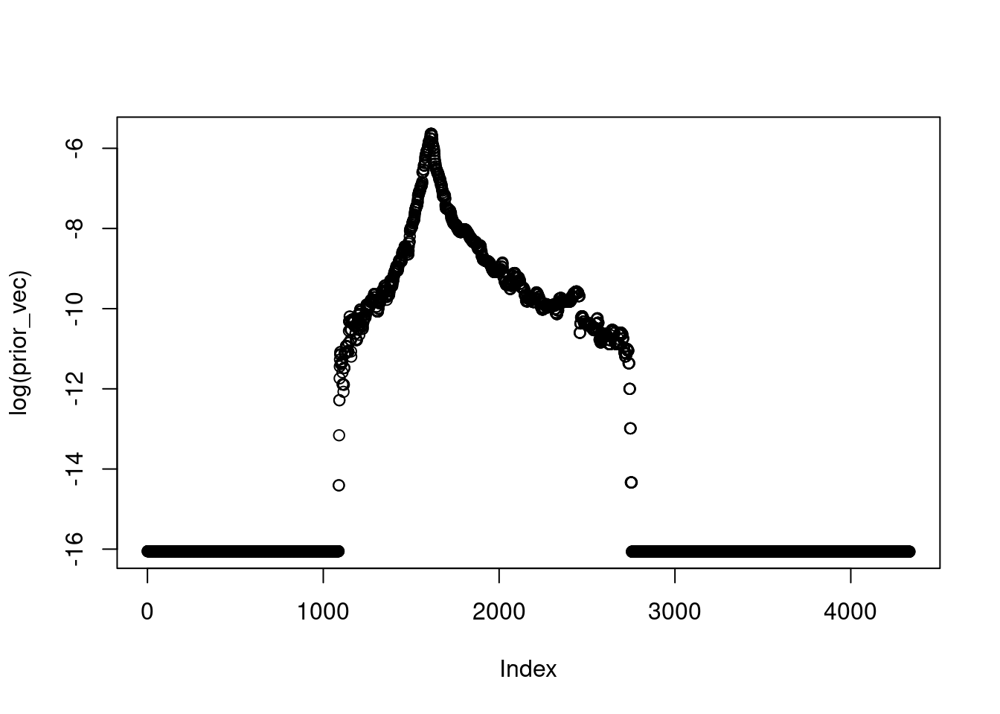
# eqtlgen_data <- readRDS(here::here("data", "processed-data", "eqtlgen.rds"))
#
# eqtlgen_data
#
# x <- eqtlgen_data |>
# filter(abs_tss_distance <= 300000) |>
# filter(tss_distance > 0) |>
# pull(tss_distance)
# x <- c(x, -x)
#
# # Setting cut = 0, ensures there is not a very large drop of density at the end
# # of the interval.
# dens <- density(x, bw = "SJ", cut = 0)
#
# dens_data <- tibble(x = dens$x, y = dens$y / 2)
#
# dens_data |>
# ggplot(aes(x, y)) +
# geom_point()
#
# dens_data |>
# ggplot(aes(x, log(y))) +
# geom_point()
#
# saveRDS(dens_data, here::here("output", "data", "density.rds"))